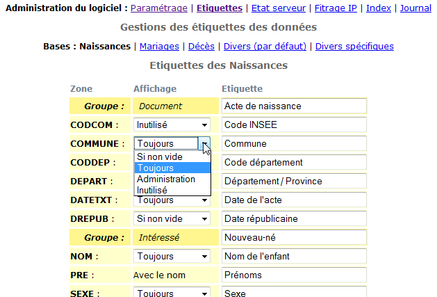
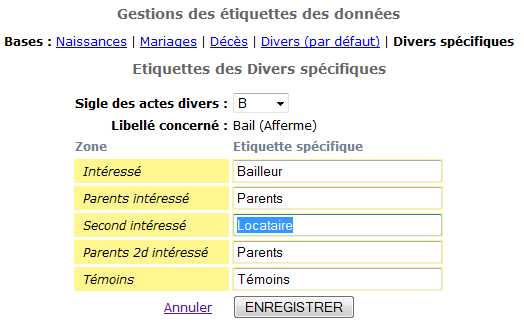
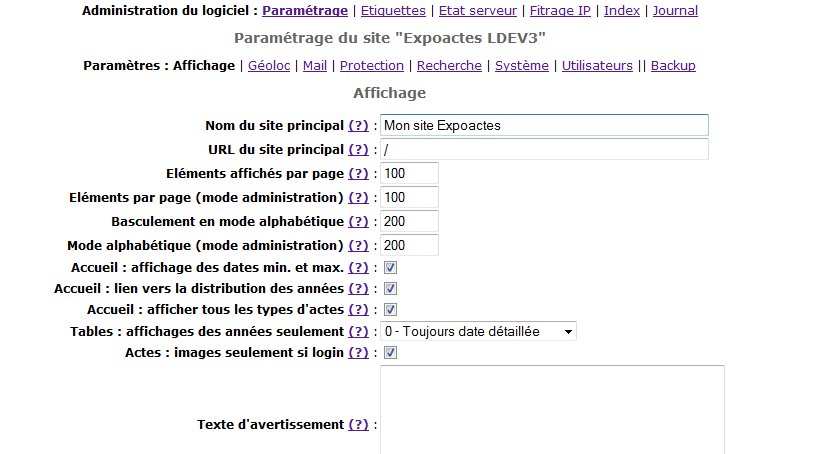
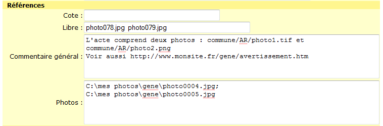
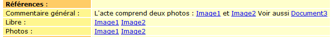

Retour à la liste des fichiers d'aide
Presque tous les éléments de personnalisation du logiciel (on dit pluôt paramétrage) sont stockés dans la base de donnée et peuvent facilement être modifiés grâce aux formulaires interactifs accessibles en mode administrateur sous l'item "Paramétrage du logiciel".
Pour faciliter la configuration, les paramètres ont été regroupés en plusieurs thèmes : Affichage, Système, Utilistateurs ... Une nouvelle section "Etiquettes" (à partir de la verson 3.0) permet de modifier les intitulés des zones affichées dans les actes.
L'ensemble de ces paramètres peut aussi être sauvegardé ou restauré selon les besoins (notamment en cas de migration de la base d'un hébergeur à un autre). Cette procédure est décrite dans le chapitre backup.
En plus de cette configuration, quelques autres actions peuvent être apportées pour modifier l'apparence du site (essentiellement modifier la feuille de styles et insérer des fichiers de textes) ou modifier les règles de sécurisation des données.
Ce chapitre traite en détail de ces tâches de configuration.
Le logiciel installe automatiquement plusieurs fichiers .htaccess permettant de contrôler l'accès aux fichers et répertoires :
Le plus souvent, il convient de ne pas modifier ces fichiers ni les renommer (le nom commençant par un point est non seulement normal mais obligatoire !). En cas de nécessité, consulter la documentation Apache avant de les modifier.
<div class="bandeau"><strong><a href="<?php echo SITE_URL ?>"><?php
echo SITENAME ?></a> || </strong>Dépouillement de tables et actes d'état-civil ou de registres
paroissiaux</div>
<div class="bandeau">
et </div> par une image ou un texte qui vous soit
spécifique. Attention toutefois à bien respecter la syntaxe HTML. Pour
conserver la meilleure lisibilité des fiches des actes, il est conseillé de
ne pas agrandir trop cette entête.#acte_naiss, #acte_mari, #acte_bans,
#acte_deces
{
background : url(../img/fond_act.jpg) repeat;
}
Chacunes des zones de données des actes peut à présent être renommée selon les besoins. Il est aussi possible de choisir les informations qui seront affichées dans la fiche publique et celles qui ne le seront que pour les administrateurs.
L'écran "Etiquettes" accessible via le menu "Administrer le logiciel" affiche la liste de toutes les zones de données utilisables pour chacun des 4 types d'actes. Nous verrons plus loin qu'il permet aussi de modifier les intitulés des groupes de données pour les actes divers spécifiques.

Comme on le voit, pour chaque zone on peut d'abord préciser quand elle sera affichées :
On notera que les zones "Prénom" sont toujours associées avec la zone "Nom" de la personne. Le réglage de l'affichage se fait donc via le nom. Ensuite on peut modifier l'intitulé de la zone. Pour faciliter la lecture, les zones sont rassemblées en groupes qui portent aussi une étiquette modifiable. Ces titres de groupe sont affichés lorsqu'au moins une de ses zones doit être affichée (même si elle est vide).
Le cinquième menu permet de modifier les étiquettes de groupes pour les actes divers selon le type de ces actes. La sélection du type s'effectue sur base du sigle associé à ce type d'actes.

Si le sigle d'une série d'acte n'a pas été défini, il est possible de l'affecter avec le menu de modification groupée des actes. La sauvegarde des étiquette s'effectue en même temps que celle des autres paramètres.
Les paramètres régulant le fonctionnement du programme sont gérés dans une table spécifique de la base de données (act_params) et sont donc directement modifiables via des formulaires ad hoc. A chaque paramètre correspond une constante toujours écrite en caractères majuscules qui est finalement utilisée dans les programmes. Le nom de cette constante est toujours indiqué entre crochets.
Il reste toutefois un paramètre qui doit, s'il est nécessaire, être configuré dans le fichier "connect.inc.php" (dans le répertoire "_config") qui contient aussi les codes d'accès à la base de données.
Le paramètre spécial EA_DB est celui qui permet de définir un autre préfixe pour les noms des tables de la base de données. Cette option permet de faire cohabiter dans une même base MySQL, plusieurs bases expoactes en préfixant par exemple les table de la seconde base par "act2" au lieu du préfixe standard "act".
define ("EA_DB","act2"); // préfixe des tables de la seconde base Expoactes
Pour modifier le fichier connect.inc.php, ouvrez-le avec un éditeur de
texte tel que le programme "Notepad" de Windows. L'instruction define
doit être placée AVANT le code "?>" final.
On comprend évidemment que ce paramètre ne peut être géré par la base de
données puisqu'il indique où trouver cette base de données.
Le logiciel propose des dispositifs pour réaliser des copies de sécurité des actes d'une part et de la liste des utilisateurs d'autre part. La liste des paramètres personnalisés de votre installation est le troisième et dernier "paquet" d'informations qu'il serait indispensable de retrouver pour restaurer votre base après un crash total. Plus couramment, cette option sera utile lorsque pour une raison ou une autre vous décidez de déplacer votre base de données d'un hébergeur chez un autre.
A cette fin, le menu "Paramètres > Backup" donne accès à un écran permettant de sauvegarder l'ensemble des paramètres dans un fichier XML et aussi de relire ce fichier et de modifier les paramètres courants avec ceux présents dans le fichier XML.
Identification du site

- Nom du site principal [SITENAME] :
Nom de votre site principal. Ce nom est utiliés dans le cartouche de tête, dans l'identification du fil RSS et dans les mails automatiques.- URL du site principal [SITE_URL] :
URL relative ou absolue du site web principal (cette URL est automatiquement utilisée pour créer un lien de retour vers les autres pages de votre site web)Quantité d'information affichée par page
- Eléments affichés par page [MAX_PAGE] :
Concerne l'affichage des résultats d'une recherche et les listes d'actes. Lorsque le nombre d'actes trouvé est supérieur à cette valeur, le surplus est reporté sur une ou plusieurs autres pages numérotées;- Eléments par page (mode administration) [MAX_PAGE_ADM] :
F onction identique au précédent mais concernent les écrans d'administration pour les déposants.- Basculement en mode alphabétique [MAX_PATR] :
C oncerne l'affichage des patronymes d'une commune. Lorsque le nombre de patronymes à présenter dépasse ce nombre, alors l'affichage passe en mode alphabétique en regroupant les patronymes par initiales. Si le nombre de patronymes pour une initiale est encore supérieur à MAX_PATR, alors le système décompose sur base de la seconde lettre du patronyme et ainsi de suite.- Mode alphabétique (mode administration) [MAX_PATR_ADM] :
F onction identique au précédent mais concernent les écrans d'administration pour les déposants.
Eléments affichés dans la page d'accueilLa page d'accueil telle qu'elle est conçue dans la version par défaut apporte beaucoup d'informations sur les actes qui sont présents dans la base de données. Toutefois, lorsque cette base de données est volumineuse (à partir de 50.000 ou 100.000 actes) la liste peut être trop longue est volumineuse. Il convient donc, dans ce cas, d'alléger cette page en utilisant un ou plusieurs des paramètres suivants :
- Accueil : affichage des dates min. et max. [SHOW_DATES] :
Détermine si les dates minimales et maximales des actes d'une commune sont affichés dans la page d'accueil d'expoactes. Par défaut, SHOW_DATES vaut 1 (=case cochée).- Accueil : lien vers la distribution des années [SHOW_DISTRIBUTION] :
Détermine si l'icône faisant le lien vers les statistiques des actes par années est présent dans le tableau public. NB : L'affichage de lien nécessite aussi que le paramètre SHOW_DATES soit activé. Par défaut, SHOW_DISTRIBUTION vaut 0 (=case non cochée).- Accueil : afficher tous les types d'actes [SHOW_ALLTYPES] :
Détermine si la page d'accueil affiche le tableau résumé des quatre types d'actes (par défaut) ou d'un seul. Par défaut, SHOW_ALLTYPES vaut 1 (activé).
Lorsque la page d'accueil n'affiche qu'un type à la fois, le passage d'un type à l'autre s'effectue en sélectionnant le type dans le résumé statistique qui comporte alors les liens ad hoc.Eléments affichés dans les fiches et listes d'actes
Quelques paramètres permettent aussi de contrôler l'affichage des listes d'actes et des fiches détaillées.
- Tables : affichages des années seulement [ANNEE_TABLE] :
L'affichage des tables d'actes présente en principe la date complète des actes. Il est possible de limiter cet affichage à l'année seulement, soit pour les visteurs nonconnectés (valeur 1) soit aussi pour les visteurs connectés qui n'ont pas le statut de déposant (valeur 2). Cette option permet d'obliger les visiteurs enregistrés à consulter l'acte (avec décompte d'un point) pour connaître la date exacte de l'évenement.
enfin, la valeur 3 impose systématiquement la limitation de l'affichage des date aux années seulement. Cette option interdit donc la recopie de tables.- Actes : images seulement si login [JPG_SI_LOGIN] :
Lorsque cette case est cochée, les lien vers les images d'actes ou les liens http (zone "Cote", "Libre", "Commentaires généraux" et "Photos") n'apparaissent que lorsque le visiteur est connecté; dans le cas contraire le texte "image privée"ou "document privé" est affiché.Textes facultatifs
Quelques paramètres permettent d'ajouter de petit morceaux de texte dans certains écrans du logiciel.
- Texte d'avertissement [AVERTISMT] :
Texte facultatif à afficher en tête de la première page au dessus de l'inventaire des communes.- Pied de page [PIED_PAGE] :
Texte libre qui est affiché sur au millieu du pied de page de toutes les pages du logiciel. Cette zone peut contenir un texte ordinaire, un texte formaté en HTML (contenant par exemple un lien vers une autre page) ou même un script javascript (pour un compteur de visiteurs par exemple).- Zone de pub sous le menu [PUB_ZONE_MENU] :
Il est possible de faire afficher sous le menu un texte quelconque tels qu'une publicité pour vos activités. Il peut aussi être utilisé pour afficher un cadre de publicités type "Google Adsens". Cette zone doit être complétée par du HTML valide. Le style .pub_menu peut être utilement créé dans la CSS.
Messages pour la gestion des cookies
Depuis 2014, tous les sites web européens qui utilisent des cookies sont sensés en informer les visiteurs. Chaque pays de l'Union Européenne a traduit cette directive dans sa loi nationale et les dispositions varient légèrement d'un pays à l'autre. Afin de faciliter la mise en conformité des sites utilisant ExpoActes, une dispositif a été ajouté dans la version 3.2 afin d'afficher un message d'avertissement lors de la première visite du site puis tous les ans ensuite.
Sans entrer dans les détails de la réglementation, il faut savoir que les cookies strictement nécessaires au fonctionnement du site (par exemple ceux mémorisant le login d'un jour à l'autre) ne doivent pas faire l'objet d'une déclaration. Par contre, si vous utilisez Google Analystics, ou un système du même type, ou que vous affichez des publicités via une régie telle que Google AdSense, ces systèmes utilisent des cookies dont l'annonce au visiteur est absolument obligatoire.
Les paramètres suivants vous permettent de personnaliser ce dispositif :
- Message acceptation des cookies [COOKIE_MESSAGE] :
Ce message, affiché tous les ans, annonce l'utilisation des cookies sur le site. Vous pouvez personnaliser le message en fonction des services activés (google analytics, publicité, réseaux sociaux, ...).- URL d'une page sur les cookie [COOKIE_URL_INFO] :
La réglementation recommande d'informer aussi précisément que possible le visiteur sur les cookies mis en oeuvre. Vous pouvez donc créer une page web informative à cet effet et préciser ici l'URL de cette page. Il peut s'agir d'une page interne au site ou externe.- Style du message cookies [COOKIE_STYLE] :
Le texte du message précisé ci-dessus apparaît dans une boîte de dialogue dont vous avez la possibilité de préciser le positionnement sur la page (en haut, en bas ou "flottante") ainsi que le style qui peut être un texte clair sur un fond foncé ou l'inverse.
Affichage de la carte globale en page d'accueil
Selon l'importance de la base et les choix de l'administrateur il peut être intéressant de moduler la manière dont sera affichée (ou non) la carte globale en page d'accueil (au niveau visiteurs).
Le premier paramètre (GEO_MODE_PUBLIC) précise le Contenu de la page d'accueil si la carte peut être affichée et quand. Cinq possibilités sont proposées :
- 1 - Carte seulement (le tableau général ne peut plus être affiché par les visiteurs mais reste accessible aux administrateurs)
- 2 - Tableau seulement (la carte n'est jamais affichée ni affichable)
- 3 - Carte affichée et tableau masqué (la carte est affichée par défaut mais on peut faire apparaître le tableau en cliquant sur le mot "Tableau" en haut de la page)
- 4 - Tableau affiché et carte masquée (Le tableau est affiché par défaut mais on peut voir la carte en cliquant sur le mot "Carte" en haut de la page)
- 5 - Carte et tableau affichés (Les deux éléments sont toujours affichés, la carte d'abord, le tableau ensuite).
Les quatre paramètres suivants déterminent les caractéristiques de la carte globale lorsqu'elle est affichée :
- Hauteur de la carte en pixels (GEO_HAUT_CARTE) : La valeur classique est de 500 pixels. Vous pouvez agrandir ou réduire cette valeur mais il est prudent de rester dans la fourchette 400 à 700 pixels. La largeur est déterminée automatiquement pour occuper toute la largeur libre de la page.
- Niveau de zoom initial (GEO_ZOOM_INITIAL) : Détermine le niveau de zoom à l'affichage de la carte (généralement entre 6 et 11). Par défaut, cette valeur est à 0 et laisse donc le système déterminer lui-même le niveau de zoom permettant de voir toutes les données sur la carte. Cependant lorsque la base comporte quelques dépouillement "exotiques", très éloignés de la région principale, l'affichage de la carte peut être trop général et il y a lieu de préciser le niveau de zoom. Il est alors conseillé de commencer avec la valeur 10 puis d'ajuster si besoin à une valeur plus petite ou plus grande.
- Centrage forcé de la carte sur (GEO_CENTRE_CARTE) : Complémentaire du paramètre précédent, celui-ci permet de "centrer" la carte initiale sur une localité prédéterminée qui doit être une des communes ou paroisses géolocalisées. Cette localisation servira également de base pour la définition des coordonnées non trouvées par Google.
- Niveau de zoom dégroupage (GEO_ZOOM_DEGROUPAGE) : Une carte comportant trop de "punaises" devient illisible. Pour éviter cela un mécanisme regroupe les localités proches en "groupes" et indique le nombre de localités présentes. Toutefois, dans les vues détaillées ce mécanisme peut se révéler désagréable en regroupant deux localités très proches sans plus apporter d'avantage. Il est donc intéressant de préciser le niveau de zoom en dessous duquel les points seront toujours dégroupés. Ordinairement une valeur entre 10 à 12 est un bon choix.
Affichage des cartes de localisation individuelles
Le paramètre Géolocalisation des localités (GEO_LOCALITE) contrôle l'affichage des liens vers la page de localisation individuelle de chaque localité à partir des tables patronymiques. NB : Pour éviter qu'une "localité" particulière soit localisée, il suffit de mettre à 0 ses deux coordonnées.
Choix du mode de gestion des mails
Le logiciel peut envoyer des email lors de la création des comptes d'utilisateur pour avertir ceux-ci du code de login et du mot de passe qui leur a été attribué.
Toutefois, cette fonctionnalité dépend de façon crucialle de la possibilité de se connecter à un serveur SMTP qui jouera le rôle de relais pour l'envoi effectif des emails (comme la boîte au lettres de la poste dans le courrier traditionnel).La plupart des hébergements fournissent cette possibilité en standard dans la configuration PHP (fonction mail()). Il n'y a donc pas de configuration spécifique à réaliser. Toutefois, si le serveur PHP n'offre pas la fonction mail, il est souvent possible d'utiliser un compte mail externe. Dans tous les cas, il faut préciser l'adresse email de l'administrateur :
- Votre adresse mail (adresse d'envoi et de réponse par défaut) [LOC_MAIL] :
Votre propre adresse e-mail. Cette adresse est utilisée pour identifier l'expéditeur du mail et le cas échant, elle est transformée en destinataire en cas de réponse au mail. C'est aussi à cette adresse que seront adressés les mails relatifs à l'autoinscription des utilisateurs.- Envoyer les mails via un serveur externe [EXTERN_MAIL] :
S'il est activé, ce paramètre indique au logiciel qu'il ne peut faire appel à la fonction mail intégrée de PHP qui est normalement préconfigurée par l'hébergeur. Il est alors nécesssaire de configurer les autres paramètres pour utiliser un compte mail personnel dont le serveur SMTP doit cependant être accessible au départ du lieu d'hébergement.Quel que soit le mode sélectionné, il est vivement conseillé de vérifier que le système peut envoyer des emails sans problème. Pour cela, un lien est proposé en bas des paramètres relatifs au Mail pour envoyer un email de test vers l'adresse de votre choix.
Paramètres de serveur de mails externe
Lorsque le paramètre précédent est coché, les paramètres du compte mail doivent alors être précisés explicitement.
Si vous possédez un compte mail chez cet hébergeur, les paramètres de ce compte doivent être utilisés de préférence.
- Serveur SMTP [SMTP_HOST] :
Adresse du serveur SMTP. Ce serveur doit être accessible à partir du lieu d'hébergement. En effet, il est courant que pour limiter le spam, certains serveurs SMTP refusent d'acheminer des courrier électroniques qui ne sont pas émis à partir d'un réseau déterminé.- Login du compte mail [SMTP_ACC] :
Votre code d'accès pour le compte mail (si le serveur SMTP exige une authentification de l'utilisateur)- Mot de passe du compte SMTP [SMTP_PASS] :
Votre mot de passe pour le compte mail (si le serveur SMTP exige une authentification de l'utilisateur)- Nom du serveur d'origine des mails [LOC_HOST] :
Nom du serveur local expédiant les mails. C'est donc le nom de la machine qui contient le site. A défaut de la connaître, il convient de donner le nom de domaine du site web (exemple www.truc.com)Mail pour l'envoi des signalements d'erreurs
Il peut être intéressant de laisser la possibilité aux visiteurs de signaler les erreurs qu'ils auraient constatés dans la transcription d'une acte et ce soit suite à la lecture de l'acte original dans des archives, soit en déchiffrant l'acte dont une copie scannée est accessible via un lien ad hoc.
Pour cela, il suffit de compléter préciser une adresse email dans le paramètre Mail pour signalements d'erreur [EMAIL_SIGN_ERR]. Un lien vers une page permettant de noter la description de l'erreur sera alors ajoutée sous chaque acte (en mode visiteur). Cette page comprend aussi des zones pour lire les nom et prénom ainsi que le maild e la personne qui signale l'erreur. Enfin, si le paramètre AUTO_CAPTCHA est activé (voir la section Utilisateurs), une image présente un code à transcrire afin d'empêcher la génération de mail par des robots. Si besoin, il est possible de noter plusieurs adresses mails en les séparant par des virgules.
Le mail envoyé au destinataire comprend un lien direct vers l'acte concerné de façon à permettre une mise à jour rapide et facile des données.
Mail pour le formulaire de contact
Pour éviter de publier l'adresse mail du gestionnaire de la base, il est possible d'activer un formulaire de contact qui permet ainsi à tout visiteur d'envoyer un message au webmaster sans connaître son adresse email. De plus le formulaire est protégé par la méthode du code captcha (voir la section Utilisateurs) qui empêche l'envoi automatisé de messages via ce formulaire.
Pour activer le formulaire, il suffit de préciser l'adresse mail du destinataire dans le paramètre Mail destinataire du formulaire de contact [EMAIL_CONTACT].
Mails par défaut pour la gestion des utilisateurs
Lors de création des comptes utilisateurs, il est nécessaire d'envoyer différents courriers électroniques vers les candidats utilisateurs notamment pour les informer des codes login et mots de passe ou encore pour les inviter à activer leur compte. Les paramètres qui suivent permettent de préciser le texte automatique de ces mails. Dans chacun d'eux il est possible de faire insérer automatiquement certaines informations en mentionnant les codes suivants qui seront remplacés spécifiquement dans chaque mail envoyé :
- #NOMSITE# : Nom du site web;
- #URLSITE# : Adresse internet du site, permettant de faciliter la connexion de l'utilisateur;
- #NOM# et #PRENOM# : Nom et prénom de l'utilisateur;
- #LOGIN# et #PASSW# : Code de login et mot de passe attribué à cet utilisateur.
Les textes par défaut ou automatiques spécifiables sont :
- Message à un nouvel utilisateur [MAIL_NEWUSER] :
Ce texte est utilisé à la fois pour la création manuelle des nouveaux utilisateurs ainsi que pour la création automatisés par import d'une liste de noms et adresses mail. Ce texte peut être modifié par l'administrateur au moment de l'ajout ou de l'import.- Message de demande d'activation SANS validation [MAIL_AUTOUSER] :
Texte automatique du mail envoyé aux candidats utilisateurs qui viennent de créer spontanément leur compte d'accès. Ce mail convient lorsque le compte est immédiatement actif sans nécessiter de validation par l'administrateur;
Attention à bien y laisser le code #URLVALID# qui donne l'adresse du lien permettant l'activation du compte. Le code #KEYVALID# permet de rappeler la clé d'activation.- Message de demande d'activation AVEC validation [MAIL_VALIDUSER] :
Semblable au précédent ce mail contient une phrase de plus pour informer le candidat utilisateur que sa demande devra être validée par une administrateur;- Message d'approbation d'un utilisateur [MAIL_APPROBATION] :
Texte par defaut du mail envoyé aux utilisateurs lors de l'approbation de leur compte. Ce texte est modifiable par l'administrateur au moment de l'approbation;- Message de refus d'un utilisateur [MAIL_REFUS] :
Texte par defaut du mail envoyé aux utilisateurs lors du refus de leur compte. Ce texte est modifiable par l'administrateur au moment du refus;
Contrôle des logins
Un maximum d'efforts a été réalisé pour sécuriser au maximum la base de données. S'il advenait qu'un utilisateur parvienne à se connecter avec un des comptes de plus haut niveau, il serait intéressant de le savoir le plus tôt possible. C'est ce que permet le paramètre " Niveaux avec login confirmé par mail" [LEVEL_MAIL_LOGIN]. Ce paramètre indique le niveau à partir duquel le login est systématiquement confirmé par l'envoi d'un mail à son propriétaire. En selectionnant le niveau 10, aucun niveau ne reçoit ce genre d'email.
Filtrage des adresses IP
A la demande de plusieurs utilisateurs, un mécanisme de protection contre les systèmes d'aspiration de sites a été intégré. Il s'agit en fait d'une version adaptée et enrichie du module "TraceIP v2" proposé sur le site www.php-astux.info.
Le module de protection N'EST PAS ACTIF PAR DEFAUT. Pour l'activer, il suffit de sélectionner l'une des options 1 ou 2 du paramètre "Utiliser l'anti-aspirateur IP" dans l'onglet "Protection" du paramétrage. Les deux variantes sont expliquées un peu plus loin.
Cette fonctionnalité nécessite que la configuration mail soit correcte afin de transmettre les alertes lorqu'un abus est détecté.Le principe de fonctionnement est simple. Pour chaque requête reçue, le logiciel mémorise l'adresse IP du demandeur et vérifie si cette adresse a déjà effectué des requêtes au cours d'une période prédéfinie. Si c'est le cas, un compteur est augmenté d'une unité à chaque requête. Lorsque le compteur dépasse la valeur limite fixée par le parmètre "Nombre maximum par période" alors l'adresse IP est automatiquement bannie : toute requête suivante est alors interdite et retourne le message qui se trouve dans "Texte renvoyé aux IP bannies".
Les deux variantes possibles dans la protection sont les suivantes :
- 1 - Compter toutes les pages : Avec ce choix, toutes les pages vues par les visiteurs sont prises en compte. Cela à pour inconvénient qu'un visiteurs qui parcourt rapidement les listes de tables peut attendre le maximum sans pour autant avaoir l'impression d'avoir abusé.
- 2 - Compter les actes seulement : Cette option ne prend plus en compte que la visualisation des actes détaillés. Ici seul ceux qui affichent beaucoup d'actes sont bloqués.
Le paramètre "Durée de la période en minutes" est important pour définir la longueur de la période consiédérée pour la mesure. Cette période est exprimée en minutes. On peut choisir une période très courte (1 minute) mais il est plus intéressant de prendre une période plus longue telle qu'une journée (1440 minutes). En effet, limiter à 10 actes par minute permettrait à un robot bien réglé de lire 10x 1440 = 14.400 actes en 24h alors que d'autoriser 200 ou 300 actes en une journée est suffisant pour tout utilisateur "normal".
Pour éviter de pénaliser les visiteurs normaux qui approchent de la limite, une possibilité d'afficher un texte d'avertissement a été ajoutée. Pour l'activer, il faut tout d'abord indiquer le nombre de pages qui comporteront un message d'alerte avant blocage dans la case "Nbre d'alertes avant blocage". Une valeur représentant 20 à 30 % du nombre maximum semble indiquée. Ensuite, il est possible de modifier le texte d'avertissement présent dans la case "Texte d'alerte avant blocage". Enfin, il est possible de choisir le mode d'avertissement via le paramètre Mode d'affichage des alertes :
- 1 : Message de couleur rouge affiché en haut de page;
- 2 : Boîte de dialogue javascript avec bouton OK à cliquer obligatoirement;
- 3 : Combinaison des deux méthodes précédentes.
Enfin, comme les adresses IP distribuées par les fournisseurs d'accès Internet ne sont en général pas fixe, un utilisateur ne garde son adresse IP que pendant 2 ou 3 jours. Il n'est donc pas nécessaire de maintenir le blocage pendant un temps plus long. Le paramètre "Durée du blocage en jours" permet ainsi de préciser le nombre de jours pendant lequel le blocage est maintenu. La valeur 0 provoque le blocage permanent. Notons que, même lorsque l'accès est bloqué, le nombre de tentative d'accès continue à être comptabilisé. Cela explique que l'on trouve un nombre d'accès supérieur à la limite maximale. S'il s'agit d'un utilisteur ordinaire, celui-ci tentera toujours quelques fois d'accéder à d'autres actes puis s'arretera très vite. Par contre, s'il s'agit d'un robot, il ne s'arrêtera pas et le nombre peut dépasser de beaucoup la valeur limite. Aussi, le déblocage automatique n'a pas lieu lorsque le nombre d'accès est supérieur au double du nombre autorisé.
Par ailleurs, le filtrage des adresses IP est en principe actif pour tous les utilisateurs enregistrés ou pas. Il peut cependant être utile d'exempter les déposants de cette vérification pour ne pas risquer de les bloquer lors d'un usage un peu trop rapide, d'autant plus probable que connaissant bien le logiciel, ces dernier l'utilisent plus rapidement. Pour cela il suffit de sélectionner le niveau d'accès à partir duquel l'exemption a lieu dans la case "Niveaux exemptés du contrôle IP". Il est toutefois à noter qu'à partir de la version 3.2, le niveau 5 est toujours exempté du contrôle IP. Cette facilité est destinée aux membres des clubs qui peuvent ainsi avoir un accès étendu aux actes.
A ce comportement natif du module TraceIP, nous avons ajouté une possibilité d'outrepasser cette protection pour certaines adresses IP ou certains "Agent". En effet, les moteurs de recherches tels que Google, Yahoo, MSN, etc accèdent aussi régulièrement aux pages des sites Expoactes et peuvent être bannis s'ils dépassent une certaine cadence de visite. Pour éviter ce problème, il est possible de détecter ces moteurs d'indexation (dit aussi "robots" ou simplements "bots") grâce à la signature de l'"agent" qu'ils fournissent automatiquement. Voir à ce sujet la liste des "agents" existant sur user-agents.org . Il est donc possible de déclarer les agents qui sont acceptés en copiant la signature (ou seulement une partie significative) dans le paramètre "Agents affranchis". Si plusieurs agents sont acceptés, il faut séparer les signatures par des VIRGULES.
Exemple : "+http://www.google.com/bot.html;,http://help.yahoo.com/help/us/ysearch/slurp;" autorise les robots de Google et de Yahoo.
Pour suivre facilement les agents qui reçoivent un libre accès, il suffit de cocher la case "Mémoriser les IP auto-affranchies" pour que celles-ci appraissent dans le liste des adresses IP affichées par l'écran d'administration.
Lorsqu'une adresse IP est bannie, le logiciel envoie un message email à un adminstrateur dans l'adresse sera précisée dans le paramètre "Destinataire du mail d'alerte". Ce mail contient toutes les informations disponibles sur la dernière page consultée et sur l'adresse IP demandeuse. De plus, un lien en fin de mail donne accès à l'écran d'administration des IP bannies. Il est alors possible à l'administrateur de supprimer le bannissement ou d'affranchir l'adresse bannie.
L'écran d'administration, accessible via le menu "Administrer le logiciel" puis "Filtrage IP" dresse le liste des adresses IP stockées dans la base de données. Selon la couleur d'affichage, on distingue trois catégories :
- Affichage en noir : Adresses IP ayant accédé au site dans la minute;
- Affichage en rouge : Adresses IP bannies avec date et heure du bannissement;
- Affichage en vert : Adresses IP affranchie soit manulellement, soit automatiquement via la liste des agents affranchis.
Lorsque le visiteur est identifié par un login, ce code est aussi ajouté dans la liste. Il faut toutefois noter qu'un utilisateur peut se connecter tour à tour avec plusieurs logins sur un même ordinateur donc avec une même IP. Inversément, il est possible qu'un même login soit utilisé via plusieurs ordinateurs différents donc via des IP différentes. Pour toutes ces raisons, le login qui est associé à une IP est le dernier utilisé via cette IP. (ajouté à la version 3.1.2)
Les liens permettent d'affranchir manuellement une adresse libre ou bannie ou de supprimer une adresse de la liste (ce qui supprime son statit d'affranchie ou de bannie).
Un lien spécifique permet de supprimer d'un coup toutes les adresses affranchies automatiquement (via la liste des agents affranchis) mais qui n'ont en fait été utiliséeq qu'un très petit nombre de fois. Cela allège la liste et facilite le contrôle.
Recherches de base et avancées
Par défaut, les recherches s'effectuent dans la base de données avec les outils standards de MySQL. La façon dont s'effectue ces recherches peut être contrôlé par les paramètres suivants :
- Recherche par défaut sur tous types d'actes [CHERCH_TS_TYP] :
Cette option, lorsqu'elle n'est pas activée, provoque l'affichage d'une liste de sélection du type des actes dans la boîte de recherche de la page d'accueil. Elle limite aussi les recherches avancées et levenshtein à un seul type d'acte à la fois. Cette option permet donc d'alléger le travail du moteur de recherche.- Comparaison proposée par défaut [RECH_DEF_TYP] :
Détermine le mode de comparaison qui est proposé par défaut pour la recherche avancée. Les deux premiers sont nettement plus économes en ressources serveur que les trois suivants car ils exploient les index. Lorsque la base est importante, il est conseillé de présélectionner ce mode car, pour la mojorité des recherches il economise les ressources du serveur et accélère la traitement.- Longueur minimale du mot recherché [RECH_MIN] :
Détermine le nombre minimum de caractères sur lesquels doit porter une recherche.
Par défaut, RECH_MIN vaut 3.
Notez que l'administrateur principal n'est pas soumis à cette restriction.Recherches par la méthode Levenshtein
La méthode de recherche avancée "sonore" ne permet pas toujours de trouver ceertains actes comportant des erreurs d'encodage et ce particulièrement si le lettre initiale est incorrecte. Pour résoudre ce problème Jean-Louis Cazor a eu l'idée d'implémenter un autre algorithme se basant sur la méthode Levenshtein. Cet algorithme est très puissant mais malheureusement très gourmand en ressouces machine. Il crée en effet des tables de données intermédiaires et effectue de nombreux calculs sur les informations prélectionnées. Il convient dès lors de le reserver aux utilisateurs avertis et de suivre les conseils d'utilisation précisés par Jean-Louis.
Par défaut cet algorithme est activé mais seulement accessible aux administrateurs. La mise à disposition de cet algorithme est contrôlée par trois paramètres facultatifs :
- Activation de la recherche Levenshtein [RECH_LEVENSHTEIN] :
Ce paramètre indique si l'algorithme est actif et si c'est le cas, où doit apparaître le lien vers la page de recherche spécifique. Les valeurs possibles sont :
- 0 : la recherche levenshtein est totalement désactivée (et donc interdite à tout utilisateur);
- 1 : la recherche levenshtein est active et accessible via un lien situé dans la page de recherche avancée;
- 2 : la recherche levenshtein est active et accessible via un lien situé dans la boîte de recherche rapide;
- Niveau d'accès pour la rech. Levenshtein [LEVEL_LEVENSHTEIN] :
Ce paramètre détermine le niveau d'accès nécessaires aux utilisateurs pour pouvoir utiliser la recherche levenshtein. Par défaut, ce niveau est 8 afin de réserver l'usage aux administrateurs seulement. Ce niveau ne peut pas être inférieur au niveau PUBLIC_LEVEL.- Secondes réservée pour terminer une recherche [SECURITE_TIME_OUT_PHP] :
La recherche levenshtein peut nécessiter plusieurs dizaines de seconde de calcul lorsque la requête est trop vague. Or la plupart des serveurs limitent le temps de calcul (souvent à 30 sec) puis abandonnent la tâche. Pour éviter cela, le paramètre SECURITE_TIME_OUT_PHP spécifie le nombre de seconde de sécurité que le système se réserve afin de stopper proporement la recherche et de signaler à l'utilisateur que sa recherche est trop complexe.
Par défaut, SECURITE_TIME_OUT_PHP vaut 5.- Etendue des recherches sur les couples [CRIT_RECH_COUPLES] :
Ce paramètre permet d'étendre ou de restreindre les possibilités de recherches sur les couples. Les valeurs peuvent aller de 2 à 4 :
- 2 : Autorise la recherche des mariages de ces couples et des naissances des enefants de ces couples;
- 3 : Idem 2 + les décès des enfants de ces couples ;
- 4 : Idem 3 + recherches des mariages d'enfants de ces couples;
Liste éclair "Généanet"
Pour faciliter le référencement de vos actes dans le moteur de recherche de Généanet, un dispositif de génération automatique de liste-éclair a a été adjoint au logiciel. Il est accessible via l'URL eclair.php à la racine du site ExpoActes pour auatnt que cette inddexation soit autorisées via le paramètre Publier la liste éclair pour Généanet [ECLAIR_AUTORISE].
La procédure produit une liste principale des communes avec le nombre d'actes puis pour chacune d'elles une liste des patronymes avec la première année, la dernière année et le nombre d'actes.
Liste principale Liste détaillées
- Décès de Graide [Namur] (657 actes) --------------->
- Naissances de Hanret [Namur] (4281 actes)
- Naissances de Incourt [Brabant Wallon] (364 actes)
- Naissances de L'Ecluse [Brabant Wallon] (64 actes)
...
BADOT;1823;1899;14;
BAETEN;1910;1910;1;
BALOY;1688;1688;1;
BARAS;1733;1896;120;...
Pour éviter de charger exagérément le serveur lors de la production de ces listes, il est possible de les scinder en plusieurs parties grâce au paramètre Nombre maximum d'actes par liste éclair [ECLAIR_MAX_ROW].
Par ailleurs, il est possible de contrôler les accès qui sont effectués à cette liste éclair en obligeant, via le paramètre Journalisation des requêtes éclair [ECLAIR_LOG], le système à journaliser les appels dans un fichier qui est stocké dans le répertoire _log. Pour que les fichiers ne soient pas trop gros, le nom du fichier change automatiquement chaque mois. Chaque ligne du fichier contient les informations suivantes, séparées par des points-virgules :
- date et heure;
- adresse IP du demandeur;
- type d'actes (N, D, M ou V ou vide pour la liste principale);
- commune;
- département;
- initiale des patronymes (si la commune doit être découpée en plusieurs parties);
- nombre de lignes générées;
- durée de la requête en millièmes de seconde;
- signature HTTP_USER_AGENT.
Gestion des URL du logiciel lui-même
- Affichage des URL sans arguments [FULL_URL] :
C e paramètre permet - lorsque la configuration du serveur web l'autorise - à utiliser une notation des URL qui ne comporte pas de paramètres. Montrons cela par un exemple :
- FULL_URL = 0 (désactivé) : http://...votre_site.../actes/tab_naiss.php?args=Graide,ALEN
- FULL_URL = 1 (activé) : http://...votre_site.../actes/tab_naiss.php/Graide/ALEN
Certains moteurs de recherche n'indexent pas bien les URL qui comportent des arguments. Il faut donc préférer le mode FULL_URL = 1 mais malheureusement cette possibilité dépend de la configuration du serveur web de l'hébergeur. Si elle ne fonctionne pas, il faut utiliser la valeur 0.
Gestion d'URL vers des images et des pages externes
En plus du dépouillement d'un acte, il est souvent intéressant de renvoyer vers l'image de l'acte (ou plusieurs images lorsque celui-ci compte plusieurs pages). A cette fin, plusieurs zones acceptent des contenus qui sont succeptibles de générer un lien vers ces images, ou le cas échéant, vers tout autre document jugé intéressant.
Les zones qui acceptents ces liens sont les zones "LIBRE", "COTE", "COMGEN" (Commentaire général) et la nouvelle zone "PHOTOS" ajoutée avec la version 3. Il existe toutefois une différence entre les trois permières et la zone PHOTO au niiveau des séparateurs. Pour les trois premières, les nom d'images ou d'URL peuvent être séparés par des blancs ou des virgules comme dans un texte ordinaire. Dans la zone PHOTOS par contre, les chemins des photos ou les URL DOIVENT être séparés par des points-vigules. Cette disposition permet à la fois de rester cohérent avec le logiciel NIMEGUE et aussi d'admettre des chemins d'accès qui comprennent eux-même des blancs.
Ainsi, les contenus suivants :

Produisent l'affichage suivant :

Reste à déterminer quelle URL est finalement générée sous le lien actif.
Lien créé pour une URL
La première possibilité consiste à inclure directement une URL complète (c'est-à-dire commençant par "http://" ou https://) pointant vers la page souhaitée. Dans ce cas, cette adresse est automatiquement détectée et est transformée en un lien actif qui pourra donc être simplement cliqué par le visiteur. Il n'y a pas de configuration particulière pour cette facilité. A partir de la version 3.2, cette règle compte une exception lorsque le lien comporte la définition d'un iframe via une paire de balises <iframe> .... </iframe>. Dans ce cas en effet, le bloc iframe est simplement restitué comme tel et permet ainsi d'afficher directement l'image pointée par l'URL.
Liens vers des images d'actes
Il est aussi possible de créer des liens vers des images ayant l'une des extensions suiavntes : .JPG, .PNG, .TIF ou .PDF (par exemple "image0234.jpg". Il faut alors savoir où se trouve cette image.
La première possibilité consiste à créer un répertoire /img_act/ à côté du pépertoire /actes/ qui contient le logiciel puis à placer les images dans ce répertoire /img_act/. Il n'y a alors rien d'autre à faire que de citer le nom du fichier image pour qu'un lien soit créé.
Exemple : Si le site a pour adresse http://www.monsite.fr/actes,
alors l'image "acte_00012.jpg" va produire l'URL "http://www.monsite.fr/img_act/acte_00012.jpg"De plus, le nom de l'image peut être précédé du nom d'un répertoire, ou même d'un chemin, de façon à regrouper ensemble par exemple les actes d'une même commune (exemple : c02/img234.jpg, c03/img566.jpg).
Si pour une raison quelconque, il n'est pas possible de créer ou d'utiliser un répertoire /img_act/ à la racine du site web, il est possible de préciser, dans le paramètre URL_JPG décrit ci-dessous, un autre répertoire placé à la racine du même site (exemple : /genealogie/mesimages/) ou l'URL complète d'un répertoire sur un autre site (exemple : http://www.imageur.com/magenealaogie/communes/). Ce préfixe sera utilisé pour générer le lien vers les images.
Images localisées dans plusieurs sites web différents
Devant la nécessité de gérer de façon nuancée les multipes cas qui peuvent se présenter, la version 3.0 introduit une notation plus complète pour la liste des URL des images d'actes [URL_JPG]. Cette doit comprendre, d'abord le chemin par défaut des images d'actes locales au serveur dont nous venons de parler au paragréphe précédente. Ensuite, et séparées les unes des autres par des points-virgules (;) on peut préciser des expression comportant soit le symblole ">" soit ">>". La signalifaction est la suivante :
- > signifie "ajouter, avant le nom des images comportant le code précédant le signe >, l'URL suivante".
Par exemple "NAMUR>http://www.site1.be/" signifie "lorsque le nom de l'image comporte "NAMUR", il faut ajouter devant ce nom "http://www.site1.be/" et donc l'image NAMUR/photo1234.jpg produit l'URL "http://www.site1.be/NAMUR/photo1234.jpg".
- >> signifie "remplacer le texte qui précède le code >> par celui qui le suit".
Par exemple "C:\mes images\genealogie\>>http://www.site1.be/actes/" aura pour effet de transformer le nom de la photo d'acte
"C:\mes images\genealogie\namur\photo1234.jpg" en "http://www.site1.be/actes/namur/photo1234.jpg".Les règles sont énoncées à la suite les une des autres dans la zone URL des images d'actes [URL_JPG] :
Exemple :
/img_act/;
NAMUR>http://www.site1.be/;
C:\mes images\genealogie\>>http://www.site1.be/actes/;
JAMBES>>http://www.site3.be/actes/jbe;Protection de l'accès aux images
Certains utilisateurs d'Expoactes, souhaitent réserver l'accès de tout ou partie des images à certains des visiteurs seulement. Le logiciel propose pour cela deux mécanismes :
- D'une part, il est possible de ne laisser voir les images que par les visiteurs connectés (se preporter ici aux paramètres "Affichage")
- D'autre part, il est possible de protéger l'accès à certaines images seulement en les plaçant dans un sous-répertoire qui doit comporter le mot "prive" dans son nom (exemple : /img_act/prive/ ou aussi /img_act/scan/prive/dinant/). Dans ce cas, le lien n'apparaitra que pour les personnes connectées ayant le niveau d'accès spécifié dans paramètres suivant. Il restera invisible pour les autres.
- Niveau d'accès nécessaire pour les images protégées [LEVEL_JPG_PRIVE] :
Niveau d'accès nécessaire pour obtenir le lien vers les images présentes dans le ou les répertoires PRIVES.Chargement des fichiers CSV
- Répertoire de stockage temporaire des chargements [UPLOAD_DIR] :
Les fichiers CSV téléchargés pour l'ajout d'actes sont transférés temporairement dans le répertoire "_upload" situé lui-même dans le répertoire "admin". Si l'hébergement oblige à utiliser un autre répertoire pour les téléchargements, il faut alors spécifier le chemin d'accès de ce répertoire avec le paramètre UPLOAD_DIRGestion des balises "meta tags"
- Personalisation de la description et des mots-clés [META_DESCRIPTION] et [META_KEYWORDS] :
Ces deux zones sont utilisées par les moteurs de recherche pour qualifier et référencer votre site web. De façon automatique Expactes ajoute dans ces deux zones le titre de la page qui varie automatiquement d'une page à l'autre en précisant la commune ou le patronyme dont il est question. Il est possible de noter une description supplémentaire ainsi que des mots-clés spécifiques.- Autres éléments pour le header HTML [INCLUDE_HEADER] :
D'autre balises meta tags peuvent être incluses dans la zone "header" pour donner des instructions plus précises aux moteurs de recherche.
Attention : ces éléments doivent respecter strictement la syntaxe xHTML.Activation des statistiques Google Analytics
- ID de suivi Web Google Analytics [GOOGLE_ANA_CODE] :
Pour obtenir très facilement des statistiques détaillées sur l'utilisation du site par les visteurs, une solution très simple et très efficace consiste à créer un compte Google Analytics puis à récupérer le n° identifiant de ce compte (il ressemble à UA-1234566-2) et enfin à renseigner cet identiiant dans le paramètre GOOGLE_ANA_CODE de Expoactes. C'est tout, après 24h à 48h les premières statistiques sont disponibles via votre compte Google Analytics.
Remarques importantes :
- il est indispensable de renseigner dans le compte l'adresse du répeertoire principale du logiciel qui comporte les code Google Analytics. En l'occurence, ici c'est le répertoire actes : l'adresse du site doit donc être par exmpple "http://XXXX.monsite.fr/actes" .
- si vous souhaitez faire suivre les statistique d'un site plus important dans le répertoire actes n'est qu'une partie, il faut alors ajouter vous-même le code javascript fourni pas Google dans toutes les autres pages du site.
Pour plus de détails voir http://www.google.com/analytics/fr-FR/index.html .Divers
- Affichage des conditions d'accès privé [SHOW_ACCES] :
Détermine l'item "Conditions d'accès" apparaît dans le menu public. Cet item n'a pas lieu d'être si l'accès est totalement libre (USER_LEVEL = 4)- Affichage de l'icône RSS [SHOW_RSS] :
Détermine si le lien avec icône du flux RSS est affiché dans le cadre des statistiques.- Temps maximum pour l'exécution d'une page [MAX_EXEC_TIME] :
Ce temps permet d'obliger ExpoActes à limiter le temps d'exécution des opérations de chargement, de backup, ... plus strictement que ce qui est détecté en se basant sur les paramètres PHP. Ne mettre une valeur inférieure à 30 que si l'on rencontre des problèmes répétés de blocage de l'affichage de pages incomplètes.- Nombre maximal d'actes sélectionnés par requête [MAX_SELECT_REC] :
Certains serveurs MySQL interdisent des requêtes qui rapportent un trop grand nombre de réponses ce qui peut poser problème pour les backups. Dans ce cas, le logiciel affiche le message "Aucun acte exporté" alors que l'on voit bien qu'il y a un grand nombre d'actes qui auraient pu être exportés. Il faut donc modifier la valeur du présent paramètre.
Ce pramètre permet donc de limiter les requêtes lors des exports et backups lorsque c'est nécessaire pour ne pas dépasser la limite impossée par le serveur.
Un valeur de 25000 ou même 50000 est alors souvent judicieuse mais rend impossible les exports plus grands que ce nombre de lignes par fichier produit (en effet, un export produit un seul fichier tandis qu'un backup peut produire plusieurs fichiers).
La valeur 0, renseignée par défaut, ne limite pas les requêtes.
Niveau d'accès public aux données des actes
De nombreux utilisateurs du logiciel souhaitent contrôler la diffusion du détail des actes en la retreignant à des personnes préalablement enregistrées ou aux membres d'une association. Pour cela, il convient de définir d'abord jusqu'à quel niveau de détail les informations sont diffusées à tout le monde. C'est le rôle du paramètre PUBLIC_LEVEL.
- Niveau d'accès public (sans login) [PUBLIC_LEVEL] :
Ce paramètres détermine le niveau d'accès qui est autorisé en mode "public" c'est-à-dire sans devoir fournir un login et un mot de passe.
Les valeurs admises sont :
- 1 = Accès public à la liste des communes uniquement;
- 2 = Accès public aux patronymes et périodes concernées (équivalent des listes "éclair";
- 3 = Accès public aux "tables" avec noms, prénoms et dates (ou années) des actes;
- 4 = Accès public aux détails des actes.
Par défaut, la valeur est 4 pour laisser la libre consultation des tables et des actes.
Mode de création des comptes des utilisateurs enregistrés
Le logiciel permet de créer les comptes utilisateur de trois manières différentes :
- Soit de façon totalement manuelle et ponctuelle : l'administrateur (niveau 9) complète le formulaire de création du nouvel utilisateur;
- Soit par import d'un fichier CSV dûment structuré comprenant la liste des utlisateurs à créer. (voir à ce sujet l'aide spécifique);
- Soit en laissant les candidats utilisateurs compléter eux-même un formulaire d'incription. Dans ce derniers cas, il convient de préciser si l'utilistateur nouveau est automatiquement et immédiatement accepté ou si sa demande doit d'abord être validée par l'administrateur.
Les deux premiers modes sont considérés comme "manuels" car ils nécessitent l'intervention de l'administrateur. Le paramètre USER_AUTO_DEF permet de définir la stratégie d'enregistrement des utilisateurs. Le second paramètre fixe le niveau d'accès attribué automatiquement.
- Enregistrement des utilisateurs [USER_AUTO_DEF] :
Mode d'enregistrement des utilisateurs et distribution des logins :
- 0 : Enregistrement toujours manuel par l'administrateur;
- 1 : Enregistrement semi-automatique via formulaire avec approbation obligatoire par l'administrateur;
- 2 : Enregistrement tout automatique sur base des valeurs par défaut de gestion des points.
- Niveau d'accès après enregistement auto. [USER_AUTO_LEVEL] :
Niveau d'accès attribué automatiquement aux personnes qui s'enregistrent directement sur le site. Par défaut, USER_AUTO_LEVEL vaut 4.Attention :
- Les modes 1 et 2 nécessitent que le fonctionnement du serveur mail soit parfait car tous les échanges sont réalisés par mail;
Pour prémunir le serveur de l'enregistrement automatique de faux utilisateurs par des robots, un mécanisme de "captcha" c'est-à-dire d'image dissimulant un code qui ne peut être déchiffré que par une personne humaine a aussi été prévu. Il est évidemment recommandé de le mettre en oeuvre mais il peut arriver que certains hébergements ne fournissent pas la librairie graphique PHP (GD2) nécessaire à son bon fonctionnement. Un paramètre a donc été ajouté pour désactiver les captchas si le serveur ne le permet pas.
- Affichage d'un code captcha [AUTO_CAPTCHA] :
Indique si les captcha peuvent être affichés. Par défaut, AUTO_CAPTCHA vaut 1.Logiquement on s'attend à ce que les utilisateurs enregistrés disposent d'une adresse mail personnelle et donc que tous les utilisateurs aient des adresses mail distinctes. Ce n'est pas toujours le cas chez les couples de généalogistes .. qui partagent parfois la même adresse. Il est dès lors possible de désactiver la détection contre les doublons des adresses mail.
- Vérifier l'unicité des adresses mail [TEST_EMAIL_UNIC] :
Interdit l'enregistrement de deux utilisateurs avec la même adresse email.Durée de validité d'un compte - Date d'expiration
La version 3 introduit une notion de durée de validité d'un compte afin de pouvoir gérer automatiquement le fait de bloquer le compte après une certaine durée ou à un date prédéternimée. Sans indication dans cette zone, les comptes créés n'expirent jamais (ou en fait à une date tellement lointaine, le 31-12-2033, que c'est équivalent).
- Date limite ou durée des comptes [LIMITE_EXPIRATION] : Cette zone permet de préciser la valeur par défaut qui sera utilisée pour la création de nouveau comptes utilisateurs. Elle admet deux formes de valeurs :
- Soit une date fixe au format JJ/MM/AAAA : cette date est utilisée systématiquement;
- soit un nombre unique qui précise une durée en JOURS à compter de la date de création : la date réelle sera donc calculée en ajoutant ce nombre de jour à la date courante.
Remarques :
- La date ainsi calculée pour toujours être modifiée par l'adminsitrateur lors de la création manuelle du compte. Par contre, lors de la création automatisée, cette date est employée tant qu'elle n'est pas modifiée par l'administrateur.
- Les comptes existant, créé avecnt la version 3, héritent toujours d'une date d'expiration "illimitée" car le système ne peut préjuger de la politique adoptée pour chause visiteur.
Délai avant suppression des comptes expirés
Il est possible de supprimer des comptes qui sont expirés depuis un temps déterminé. En effet, ces comptes sont inutilisable et si les propriétaires n'ont pas marqué leur intention de les faire renouveler on peut considérer qu'ils sont définitivement inutilisables. Il peut être utile de les éliminer pour gérer plus facilement les comptes actifs. Le paramètre DUREE_EXPIR donne le nombre de jours de dépassement de la date d'expiration après lequel un compte peut être sélectionné pour suppression. Notez que cette supression n'est jamais automatique mais doit être demandée dans la gestion des utilisateurs. La valeur par défaut est de 90 jours.
Zone personnalisable dans la liste des utilisateurs
La version 3 ajoute également une possibilité de collecter une information supplémentaire aux données standard concernant l'utilisateur. Cette zone peut alors être étiquetée au choix de l'adminsitrateur et elle figurera dans le formulaire d'auto-inscription des utilisateurs. Elle pourra permettre, par exemple, de collecter l'adresse ou un n° d'affiliation du nouveau membre.
- Libellé de la zone libre [USER_ZONE_LIBRE] : Cette zone permet d'ecoder le libellé ou la question posée à l'utilisateur lors de son inscription. Si la zone reste vide, alors la zone libre n'est pas affichée dans le formulaire d'auto-inscription
Droits donnés aux utilisateurs
- Niveau pour pouvoir changer de mot de passe [CHANGE_PW] :
Détermine le niveau d'accès à partir duquel un utilisateur enregistré a le droit de modifier lui-même son mot de passe. Par défaut, CHANGE_PW vaut 1.
Si plusieurs utilistateurs doivent partager le même code d'accès et le même mot de passe (par exemple au niveau 4), il est prudent d'en interdire la modification.
Gestion de points pour limiter le nombre d'actes pouvant être affichés par utilisateur
Certains utilisateurs du logiciel ont souhaité que soit inclus un moyen de limiter le nombre de consultation d'actes détaillés.
Cette gestion est tout à fait facultative et n'est pas mise en oeuvre par défaut.
Pour l'activer il faut modifier les valeurs des trois paramètres ci-dessous qui détermineront les modes d'attribution des "points" aux utilisateurs enregistrés.
Le système fonctionne sur base d'un capital de "points" qui sont affectés aux utilisateurs disposant d'un code de login. Ces points peuvent être attribués manuellement par l'administrateur ou automatiquement par le programme. Dans ce dernier cas, les paramètres permettent de fixer le nombre de points qui sont automatiquement attribués à chaque utilisateur ainsi que la périodicité avec laquelle cette "recharge" a lieu. Le système est extrêmement souple car il permet aussi bien de prévoir que l'on peut "voir" maximum 10 actes par jour (recharger 10 points tous les 1 jours) jusqu'à 1000 actes sur un an (recharger 1000 points tous les 365 jours).
La recharge n'est pas cumulative: ainsi si la recharge est fixée par exemple à 30 points tous les 7 jours, un visiteur qui ne vient sur le site qu'une fois tous les trois mois dispose de 30 points qui lui sont affecté le jour où il revient sur le site (et non 480 points qui se seraient accumulés). C'est en effet, au moment du login que le système recharge le compte lorsque les conditions sont remplies.
Le système permet toutefois à l'administrateur de donner à qui il veut des points supplémentaires ou de faire une recharge intermédiaire. Enfin, l'administrateur peut donner à chaque membre le "régime" qui lui convient : soit la recharge automatique, soit la recharge manuelle soit encore le libre accès. Les membres avec les statuts 8 et 9 (administrateurs) disposent d'ailleurs automatiquement d'un libre accès.
Notons encore que le système ne décompte pas de point à un déposant pour voir les actes qu'il a déposé. Par contre, il n'a pas été prévu d'ajouter des points aux déposants car il aurait été trop facile de déposer 1000 actes puis de les supprimer pour "recharger" son compte sans difficulté. A charge pour l'administrateur de gérer ces situations à sa discrétion.Notons que lorsqu'un utilisateur ne dispose plus d'aucun point, les dates dans les tables sont systématiquement limitées à l'année. L'accès à la date complète (et au détail de l'acte) nécessite de recouvrer des points.
Les paramètres à définir sont les suivants :
- Mode de gestion des points [GEST_POINTS] :
Détermine le régime de gestion des points par défaut:
- 0 : aucune gestion des points pour aucun membre;
- 1 : gestion des points avec recharge manuelle. C'est l'adminsitrateur qui distribue les points et lui seul;
- 2 : gestion des points avec recharge automatique. La recharge s'effectuera automatiquement pour tous les membres auxquel l'administrateur affectera le régime 2 (valeur par défaut).
- Points donnés à chaque recharge automatique [PTS_PAR_PER] :
Détermine le nombre de points qui sont attribués aux membres à chaque recharge automatique.- Nombre de jours entre deux recharges auto. [DUREE_PER_P] :
Détermine le nombre de jours qui séparent deux recharges automatiques.- Recherche autorisée si points épuisés [RECH_ZERO_PTS] :
Autorise ou interdit la réalisation de recherches lorsque le stock de points est épuisé.Liste des déposants
- Niveau min. de la liste des déposants [DEPOSANT_LEVEL] :
Niveau à partir duquel un utilisteur apparait dans les liste des déposants lors des import par l'administrateur. Cette liste permet à l'administrateur d'importer des données en lieu et place des utilisateurs qui n'ont pas l'expertise nécessaire pour effectuer cette opération. Pour ne pas encombrer cette liste, il est possible de la limiter aux niveau de 9 à 6, 5 ou 4.Conditions d'utilisation
- Texte des conditions d'utilisation [TXT_CONDIT_USAGE] :
Ce texte ne peut apparaître que lors de la création d'un nouveau compte par les utilisteurs eux-même (si Enregistrement des utilisateurs est à 1 ou 2). Si la zone est complétée, le texte est affiché dans le formulaire de lecture des coordonnées du nouvel utilisteur ainsi qu'une case à cocher qui doit être explicitement cochée pour que la demande de création de compte soit prise en compte. Le texte à afficher peut être aussi long que nécessaire.
Retour à la liste des fichiers d'aide